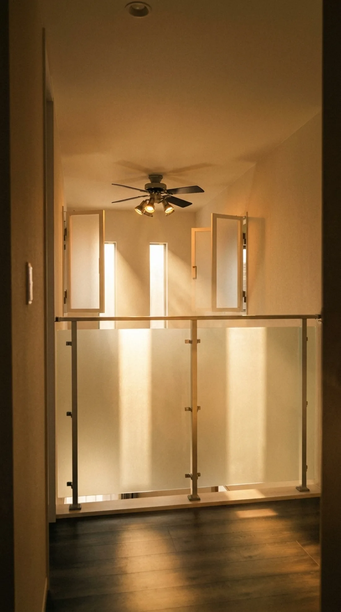
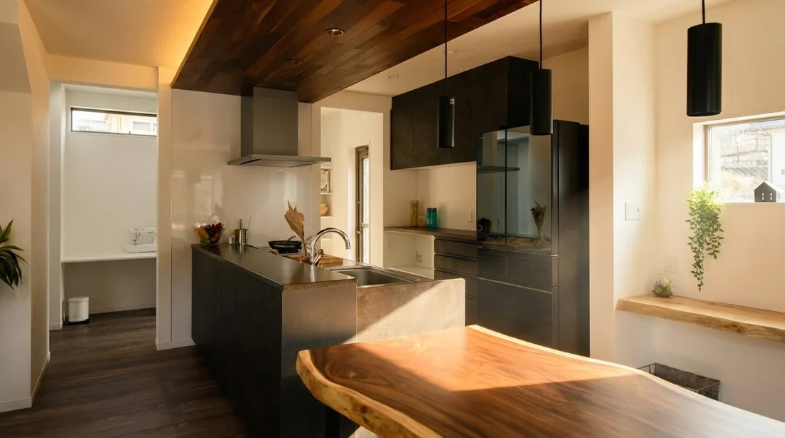
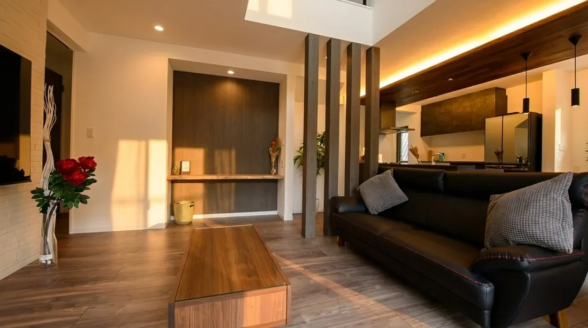
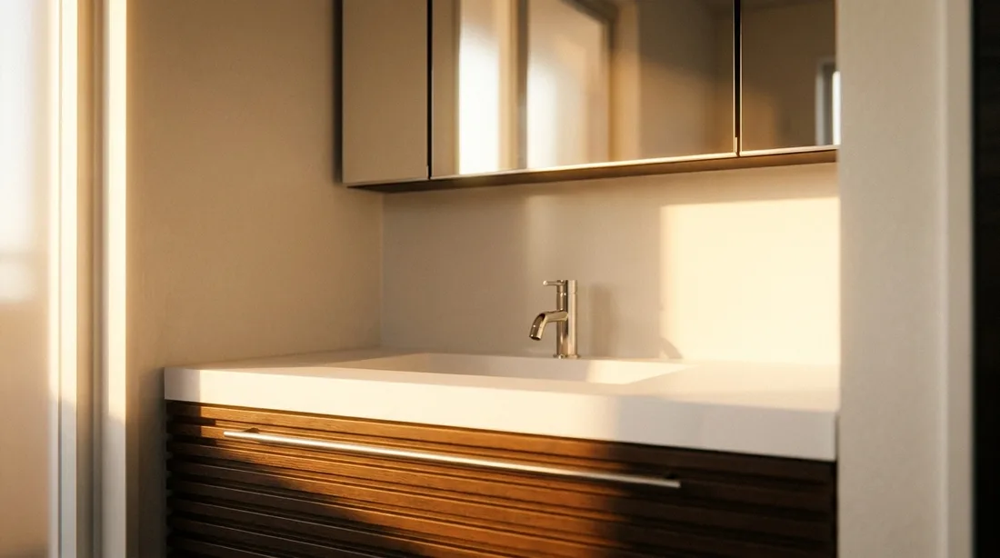
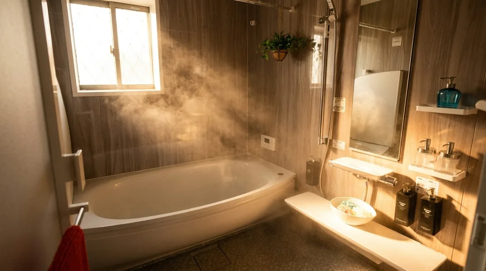

PLAN 01
花
 株式会社
やまと不動産
株式会社
やまと不動産
株式会社
やまと不動産
株式会社
やまと不動産
Kitchen
Standardクリナップ ステディア標準
Bath
StandardTOTO サザナ 1.25坪標準
Vanity
Standard三面鏡・広収納標準
Living
Standard天井高2.4m・ハイドア2.3m標準

Atrium
Design吹き抜け・天井を上げる自由設計
標準装備が、充実しています。
オプションだと思っていた設備が、はじめから付いています。
Yamato Fudosan ── Nara
大手の価格に、
動揺した方へ。
To You
家を買う夢を、
あきらめた方へ。
やまと不動産なら、
お役に立てる
かもしれません。
ご契約・着工の後から、
費用は増えません。
※適用条件の詳細は、お見積りの際にご説明します。
Price ── 花鳥風月・やまとの家
2,480万円〜
この価格で、本当に高品質の
家が建ちます。
建物本体価格・税込（「京」／土地別途）
10年後、 50年後に、
違いがわかります。
Wall旭化成ヘーベル パワーボード標準
2,480万円〜で、本当に高品質の家が建ちます。
建物本体価格・税込（「京」／土地別途）
やまと不動産の家を、見に来てください。

やまと不動産の信条は
モデルハウスで見た設備も、暮らしやすい間取りも、
あとから追加費用がどんどん増えていくものではありません。
最初から、いいものを標準で入れています。
断熱、耐震、外壁、設備、地盤。
見えないところにも手を抜かず、長く気持ちよく住める家にしています。
それでいて、無駄な中間コストや見えにくい費用はできるだけ抑えています。
「この予算では無理かも」と思っていた人にこそ、
もっといい家が、その予算で建つことを知っていただきたいです。


引き渡しの日に
「やまと不動産にお願いしてよかった」
と言ってもらえる家を
私たちはつくっています。

Product Lineup ／ 商品ラインナップ
花・風・京。3つのプランは、すべて追加費用なしのコミコミ税込です。間取りも設備も、最初から入っています。
※ 価格・面積・間取りは確定値です。平面図は実施図面に差し替え予定です。
間取りも設備も入った、コミコミ税込のお見積もりです。地盤改良費が必要になっても、当社が負担します。
── 「追加かからへんくて家建ったね」。私たちが目標にしている、お客様の一言です。
Reason ／ この価格の理由
やまとで家を建てられたお客様から、いちばん多くいただく声です。
断熱・耐震・外壁・設備・地盤。家の性能を決める部分に、しっかり手をかけています。そのうえで、大きなモデルハウス展示場や広告にはお金をかけません。だから、適正な価格のまま、高い水準の家づくりができます。
分譲地に建てた家を、そのままモデルハウスにしています。広告も必要な分だけにして、そのぶんを家の中身に回しています。
提携機関：JIO 日本住宅保証検査機構／地盤ネット／大阪ガス


やまとの分譲地は、奈良市・生駒市を中心に京都南部まで広がっています。通勤も通学も、あきらめなくて大丈夫です。
所要時間はおおよその目安です。列車の種別・時間帯により変わります。
毎月の家賃は、払ってしまえば手元に何も残りません。同じ金額を住宅ローンの返済に充てれば、その家はご家族の資産として残ります。大阪や京都に通える奈良で、一戸建てから始めませんか？
奈良と京都南部、この広がりの中から、ご希望に合う一区画がきっと見つかります。
自社分譲物件一覧を見るはじめての方がイメージしやすいように、10の段階にまとめました。それぞれの段階で何をするかは、担当者が毎回ご説明します。
Drag / Scroll →
よくあるご質問
お見積もりは税込のコミコミ価格です。ご契約の後も、着工の後も、金額が増える項目を残しません。地盤改良が必要になった場合の費用も、当社が負担します。正直にお伝えすると、カーテンレールと居室の照明は標準に含まれないため、事前のご用意をお願いしています。
できます。奈良・京都南部に自社分譲地を常時150区画ほどご用意しています。土地探しからのご相談も、土地が決まっている方のご相談も承ります。
建てられます。京都府南部（木津川市・京田辺市など）にも自社分譲地があり、宇治の京都支店でもご相談いただけます。
かかりません。モデルハウス「やまとランド」の見学は無料です。予約制のため、ご来場前にご予約をお願いします。
無理におすすめすることはありません。その土地やプランがお客様に本当に合っているか、メリットもデメリットも正直にお話しします。合っていなければ、別の案をご提案します。
このほかのご質問は、お問い合わせフォームからお気軽にどうぞ。
モデルハウス「やまとランド」の見学は、無料・予約制です。ご見学の場で、契約を迫ることはありません。資料だけ、LINEだけのご相談も歓迎です。